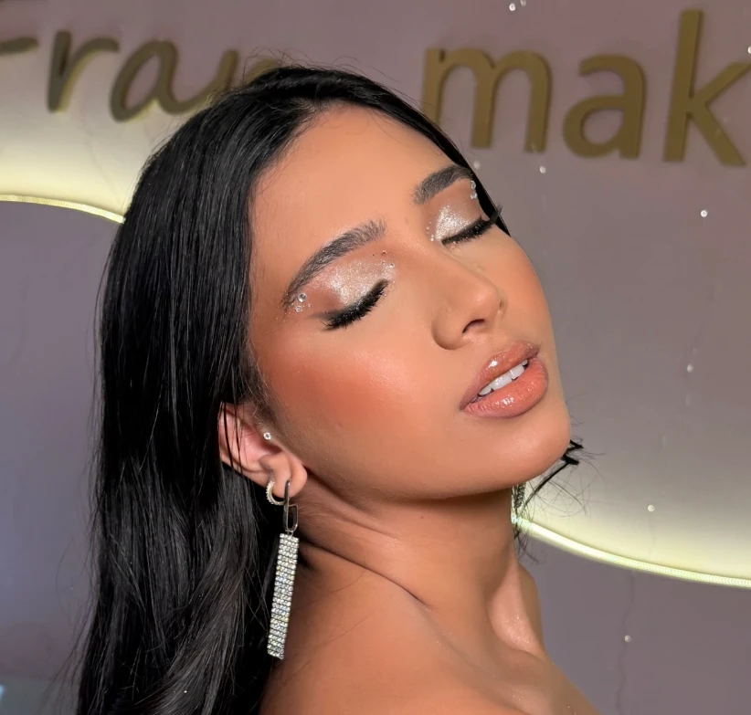
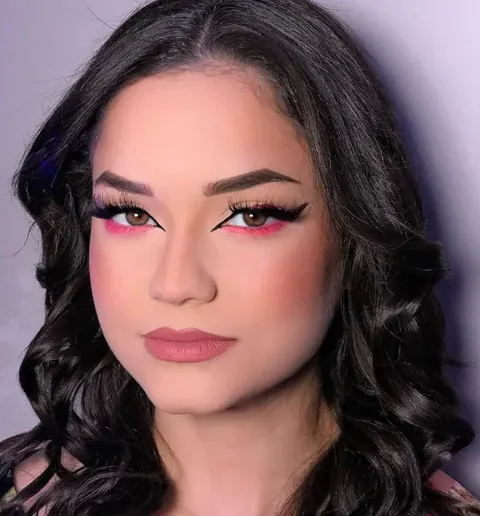
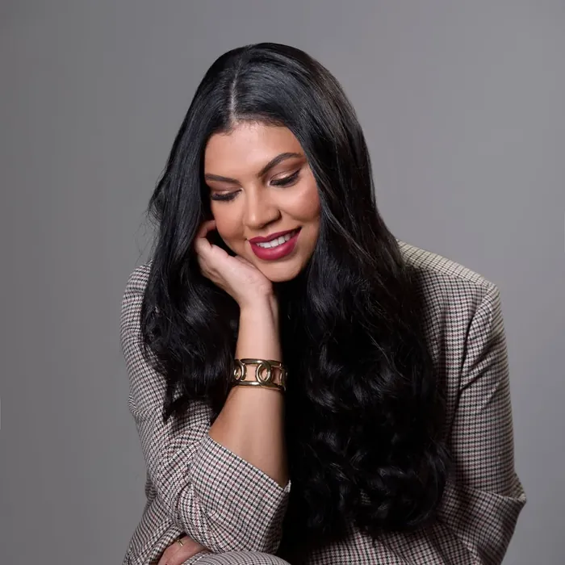
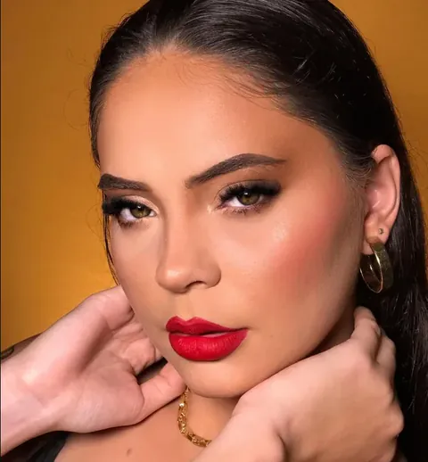
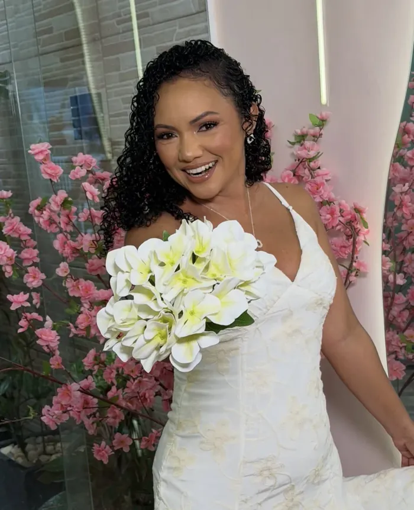
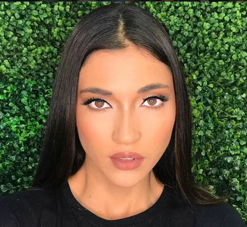
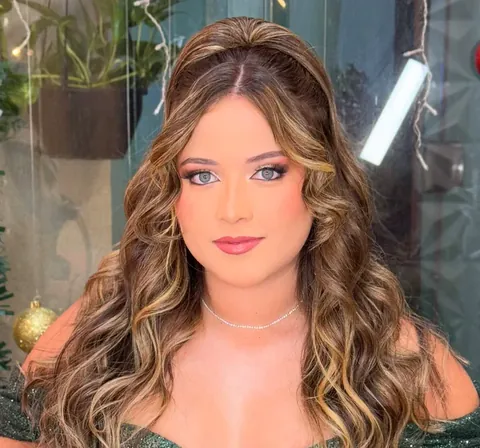
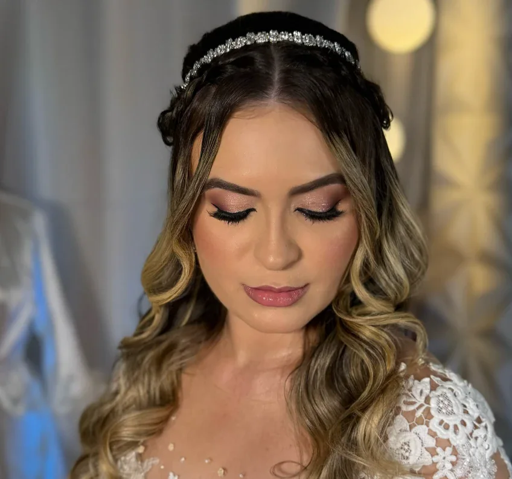

Make Social
Maquiagem completa, contorno e iluminação de alta durabilidade para festas e eventos.

Sou Franciana, maquiadora há mais de dez anos e especialista em olhos. Cada produção começa por você: o desenho do seu olhar, o tom da sua pele e o que a ocasião pede. Também assino o cabelo e o penteado, para que tudo conte a mesma história.







Maquiagem completa, contorno e iluminação de alta durabilidade para festas e eventos.

Maquiagem e penteado em harmonia. Hair para complementar a sua produção em festas, formaturas e casamentos.

Pacote luxo: Teste de maquiagem, skincare preparatório e acompanhamento exclusivo.